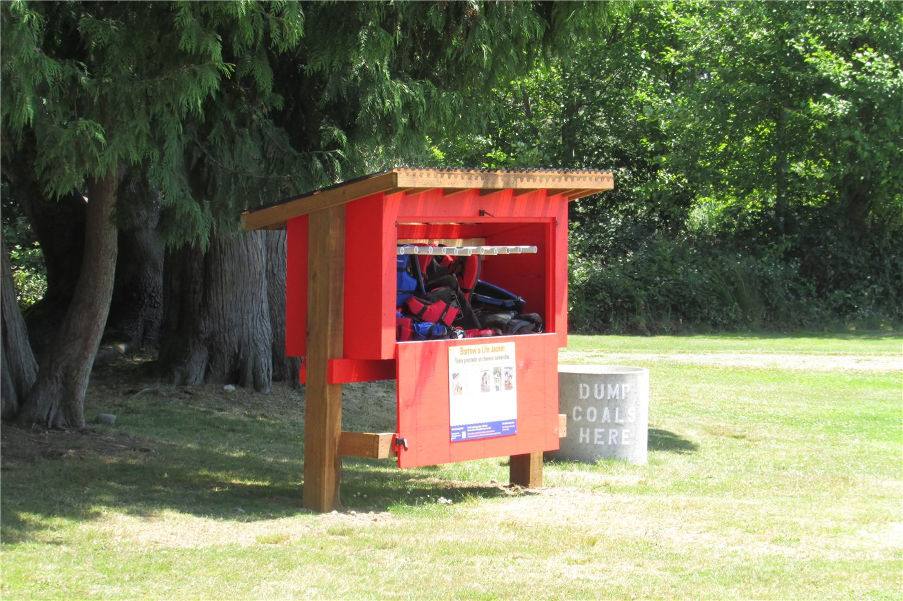

인도네시아 여객선 자바해서 전복… 129명 실종, 6명 사망
승객과 승무원 243명을 태운 인도네시아 여객선이 자바해에서 전복됐다. 108명이 구조됐으나 129명이 여전히 실종 상태이며, 선체는 뒤집힌 채 떠 있는 것으로 확인됐다.
장입군 기자 · 2026.09.23
橋국제

승객과 승무원 243명을 태운 인도네시아 여객선 비르고 트랜스포트 8호가 자바해에서 전복됐다. 배는 동자바 수라바야를 출발해 남칼리만탄 반자르마신으로 향하던 중이었다.
광고 문의 · 300×250선장은 높이 3미터에 이르는 파도 속에서 배가 기울고 있다는 조난 신호를 보냈다. 현지 시각 일요일 오전 2시께 교신이 끊겼고, 약 두 시간 뒤 마살렘보 해역에서 전복 사실이 확인됐다.
당국에 따르면 최소 108명이 구조됐고 6명이 숨졌다. 129명은 여전히 실종 상태다.
군과 경찰 등이 함정과 항공기 17대를 투입해 수색을 이어 가고 있다. 인도네시아 교통 장관은 헬기 승무원의 관측을 인용해 선체가 침몰하지 않고 뒤집힌 상태로 떠 있다고 밝혔다.
수색은 기상 조건에 좌우된다. 사고 해역은 조류가 빠르고 파고가 높은 구간으로 알려져 있다.
인도네시아는 1만 7천여 개 섬으로 이뤄져 여객선이 주요 교통수단이다. 기상 악화 시 운항 통제와 정원 관리가 반복적으로 지적돼 온 과제다.
본지는 구조 인원과 실종자 수의 확정, 그리고 운항 허가 및 기상 경보 절차에 대한 조사 결과를 후속 확인할 계획이다.